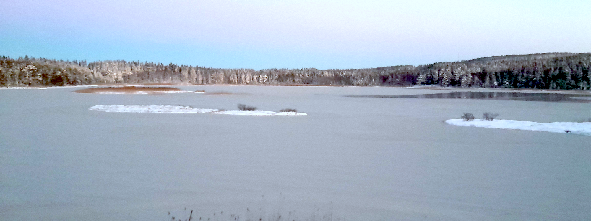
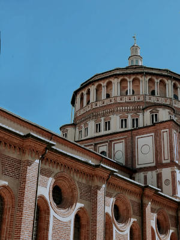
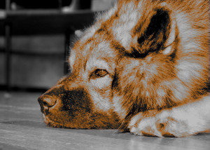
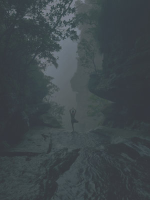

Uppgiften bestod av att skapa en webbplats (den här) som presenterar ett antal givna bilder som ska behandlas så att de är enhetliga med varandra och webbplatsen. Jag har huvudsakligen arbetat med bildbehandlingsprogrammet GIMP, men jag gjorde logotypen i Vectorpea.